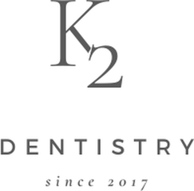
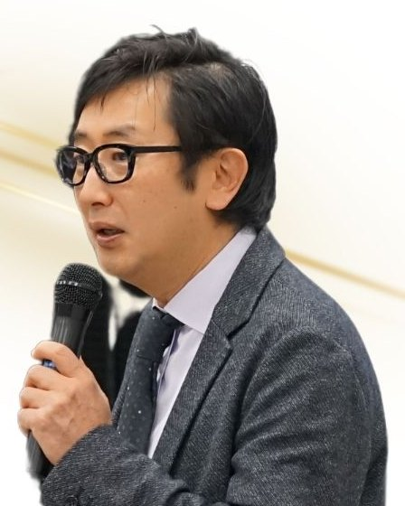
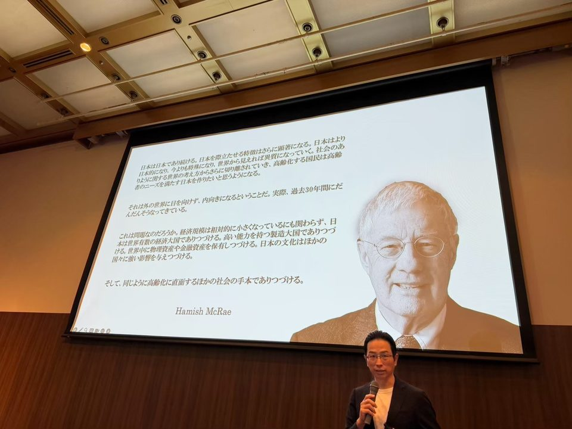
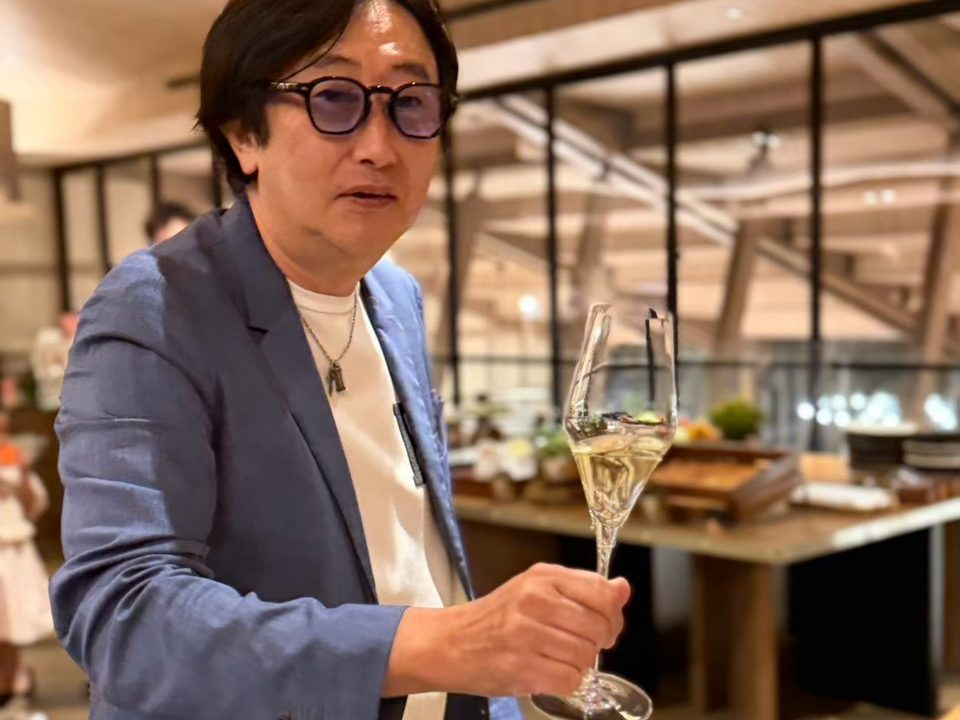
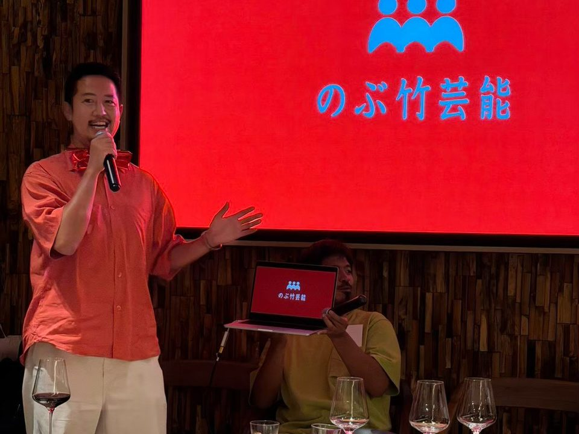
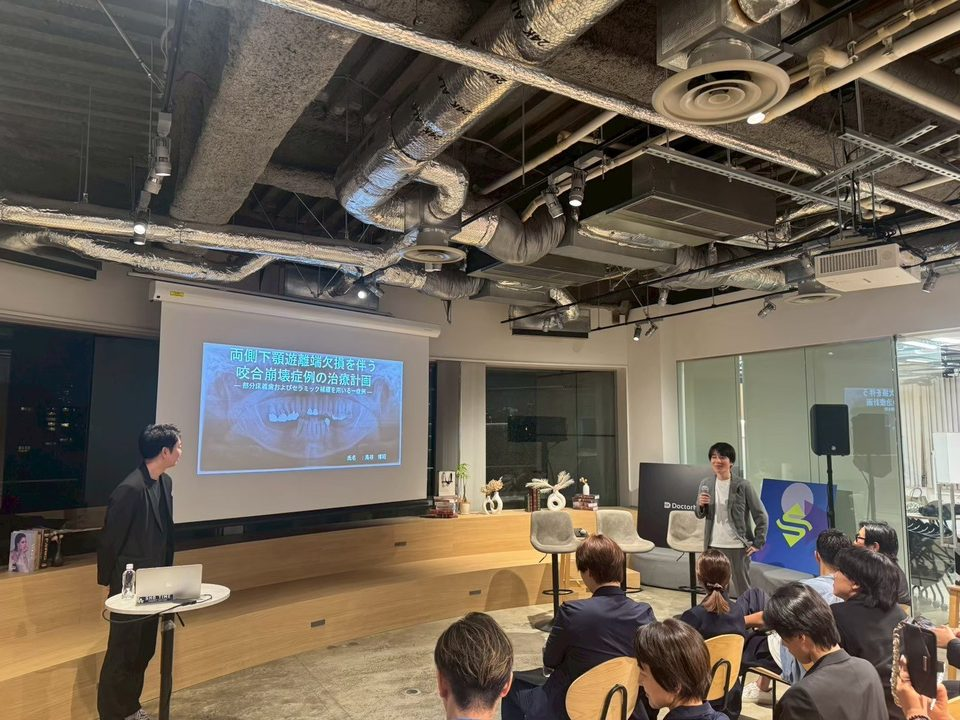
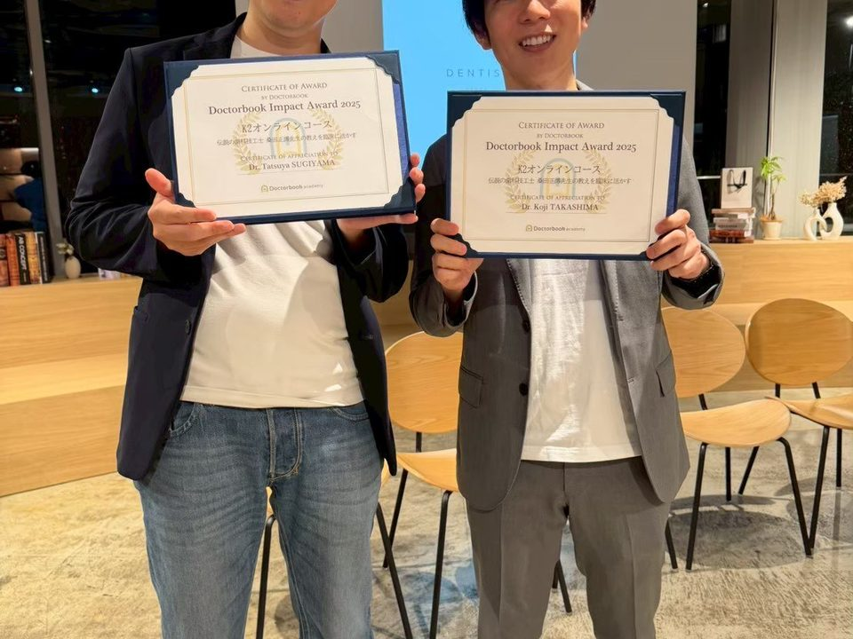
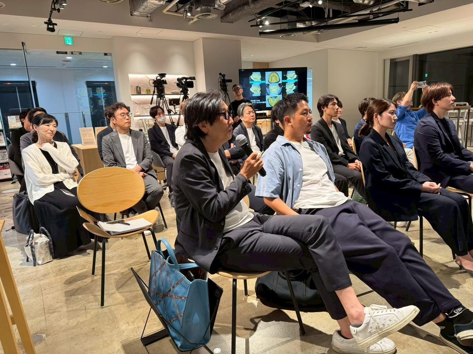
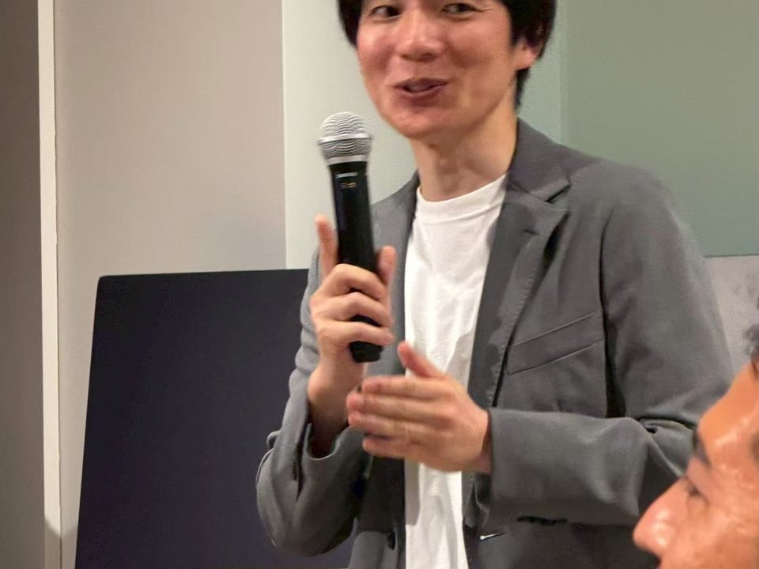

審美と機能を学ぶ
桑田正博先生の咬合理論と修復治療のテクニック、そして北原信也先生の審美。1本の歯から全顎治療まで、同一のコンセプトで学ぶ歯科スタディグループです。

FOR NEWCOMERS
はじめての方へ
NEWS
お知らせ
- 2026.102027年の年間スケジュールを掲載しました。
- 2026.102027 年間コース（全6回）の受講生を募集しています。
- 2026.10ホームページをリニューアルしました。
GALLERY
活動の様子








